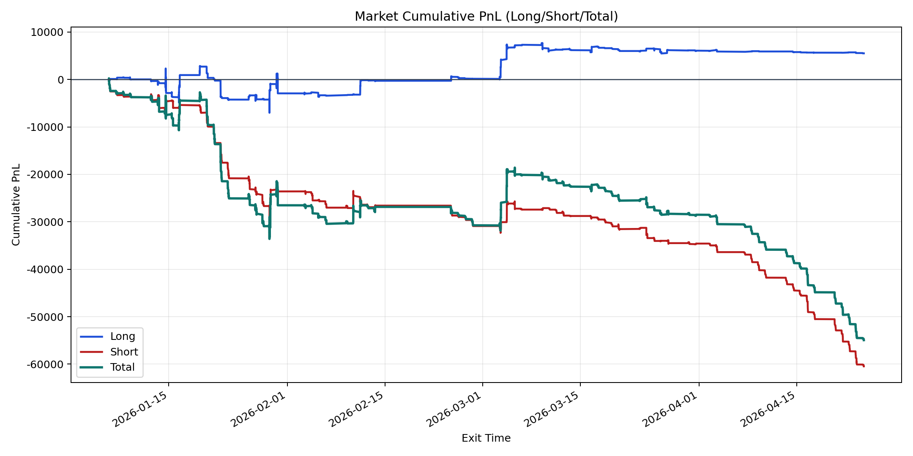
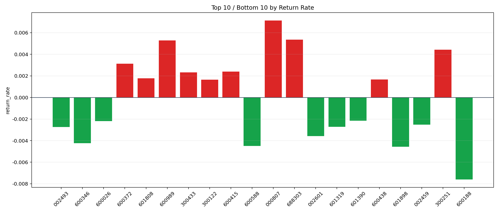

| repo_root | /home/haoranyou/data/output/alpha0.4_1w_5s_3ticks_index_filter/index_weights_300 |
|---|---|
| period_months | 12 |
| period_label | 2026-01-06_to_2026-04-24 |
| start_time | 2026-01-06 10:07:22 |
| end_time | 2026-04-24 14:45:02 |
| n_trades | 8488 |
| n_symbols | 62 |
| total_pnl | -54942.61140000016 |
| long_total_pnl | 5515.9751999998825 |
| short_total_pnl | -60458.58660000005 |
| total_entry_notional | 79496955.0 |
| long_entry_notional | 28002333.0 |
| short_entry_notional | 51494622.0 |
| total_return_rate | -0.0006911285017143129 |
| long_return_rate | 0.0001969827014056251 |
| short_return_rate | -0.0011740757432883002 |
| top_symbols_by_return | ["000807", "688303", "600989", "300251", "600372", "600415", "300433", "601808", "600438", "300122"] |
| bottom_symbols_by_return | ["600188", "601898", "600588", "600346", "002601", "002493", "601319", "002459", "600026", "601390"] |

